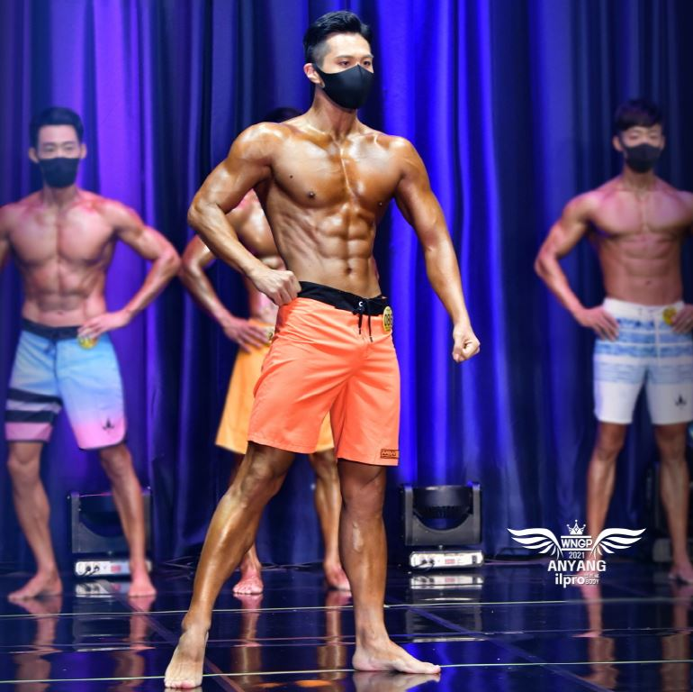
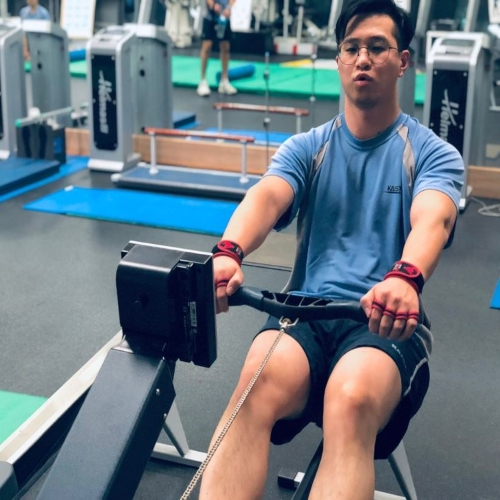
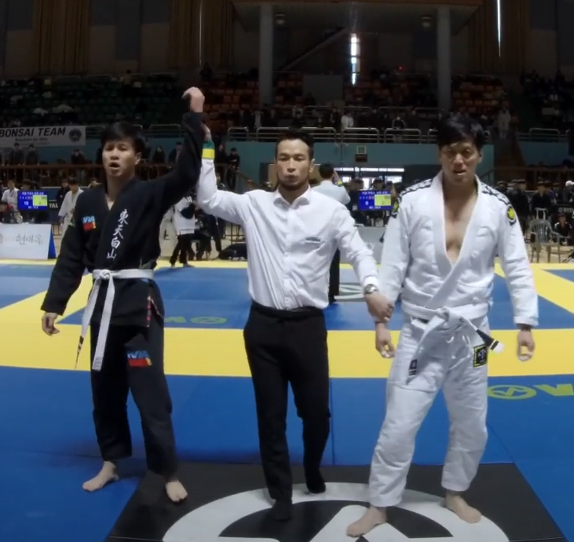
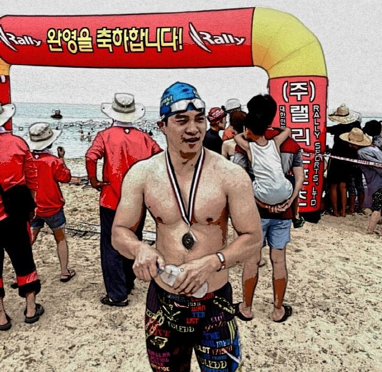

Activities I have challenged so far
Suffer the pain of DISCIPLINE or the pain of REGRET.

Fitness Competition
I had vaguely dreamed to participated in fitness competitions. It might be too late to participate in, but finally!
- 2021. 🥉 3rd place in Sport Model competition (AGE Middle), WNGP Anyang
- 2021. 8th place in Sport Model (Beginner), WNGP Anyang
- 2021. 4th place in Physique Model (AGE Middle), WNGP Anyang
- 2021. 9th place in Physique Model (Beginner), WNGP Anyang
- 2016. Sport instructor 2nd-level license for Bodybuilding
Certificated by Ministry of Culture, Sports, and Tourism of South Korea

Rowing Competition
I wanted to enjoy rowing but it was hard to find out a rowing club around me. Alternatively, I enjoyed indoor rowing.
- 2018. 🥇 1st place in 2,000m Individual, 12th Indoor Rowing Competition, KAIST
- 2018. 🥈 2nd place in 1,200m Individual, 12th Indoor Rowing Competition, KAIST
- 2016. 🥇 1st place in 2,000m Individual, 10th Indoor Rowing Competition, KAIST
- 2016. 🥈 2nd place in 1,000m Team, 10th Indoor Rowing Competition, KAIST
- 2015. 🥇 1st place in 1,000m Team, 9th Indoor Rowing Competition, KAIST
- 2014. 🥈 2nd place in 2,000m Individual, 8th Indoor Rowing Competition, KAIST

Brazilian Jiu-jitsu Competition
I really enjoyed BJJ, but stopped training BJJ due to Covid-19. Now I am waiting for the time to go back to a BJJ center
- 2019. Promoted to 1st stripe at Blue belt
- 2018. Promoted to Blue belt
- 2018. 🥇 1st place in the White Belt Masters 1 -94kg Division
Real Jiu-jitsu: Jeonju Open Competition - 2018. Promoted to 4th stripe at White belt
- 2017. Promoted to 3rd stripe at White belt
- 2016. Promoted to 2nd stripe at White belt
- 2016. Lost in first round (White Belt Master 1 -82kg Division)
Daejeon Open KBJJA Jiu-Jitsu Championship - 2016. Promoted to 1st stripe at white belt
- 2016. Lost in first round (White Belt Master 1 -82kg Division)
Cheongju Open KBJJA Jiu-jitsu Championship

Swimming Competition
It was amazing to swim 3.3km in the sea. I might try a triathlon someday!
- 2014. 🏅 Went the distance in 1km Division, 3th General Isabu Sea Swimming Competition
- 2012. 🏅 Went the distance in 3.3km Division, 3th Jo O-ryeon Sea Swimming Competition
- 2012. 🥉 3rd place in Back-stroke Division, TJB Masters Swimming Competition